Yes, I know it's been 6 months since I finished up the April month, and yes, I know I'm supposed to do May before June. However, I'm still not quite sure about my angle for May and I did have an idea in mind for June 😅 I am starting to understand that the topics that I can get really enthusiastic about are a bit of a niche, that not many other people truly know it. I can only hope that for the people who are fans, as I am, this month will be a joy to explore. The topic that I've chosen for our month of fun is "Cardcaptor Sakura"!

A magic-girl manga (i.e. Japanese comic) from about 20 years ago. It was the first manga I owned, when manga was practically unknown in the Netherlands. I even had to travel all the way to the biggest city of our province to buy a new volume. I'm still dreadfully jealous of how perfect and cute practically each panel of the manga looks 😍 I almost chose this subject for our January Nostalgia month, but eventually went with Dragonball Z then. Nevertheless, after 20 years a new "arc" of Cardcaptor Sakura has started again recently. Therefore, while thinking of what to do for our fun month, I just couldn't shake the feeling of wanting to so something with Cardcaptor Sakura (CCS).
One of my favorite things about CCS is how beautiful the writers, CLAMP, make each page. Especially the covers of each chapter, which are tiny works of art (the image above is the cover for chapter 23). I therefore wanted to investigate the covers through data somehow. And I've never before done any kind of analysis based on image data. I therefore thought that creating a visualization that would abstract the colors of each cover into 3 - 8 colors would be fun and new for me.
There are 50 chapters in the original CCS manga, divided into two "arcs". I went through all of the 12 CCS volumes (each contains ±4 chapters) to see what image was on the cover of each chapter (btw, you can also read CCS online, for example here). In my volumes the covers are printed in black and white. However, all of those chapter covers have since been published in full-color in several CCS art books. I therefore searched for and downloaded the corresponding color image from the CCS Wiki page.
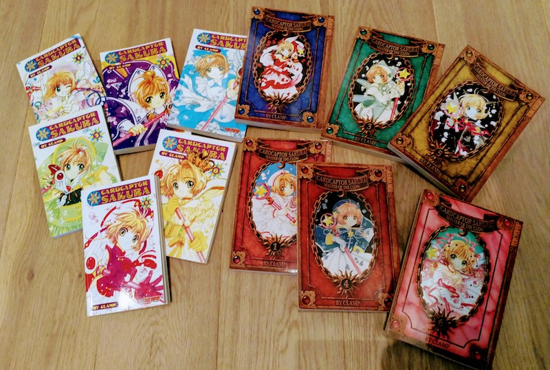Using the imager package in R, I loaded the images into R where each pixel was transformed into a multidimensional array of RGBA values. I converted that complex array into a more simple data frame of (number of pixels) * 3 (for r, g, and b value) size. To figure out which algorithm would cluster the pixel values into decent colors groups I tried several things. First, I tried different techniques: from the standard K-means, to hierarchical clustering and even tSNE. But I also converted the RGB values of each pixel into other color spaces (where colors have different "distances" to each other and can thus result into different cluster), using, amongst others, the colorspace package.
I often converted the results of each test into a bar chart such as below to see the color groups found. Eventually, I found that using Kmeans together with the colors converted to "Lab" gave, visually, results that I found most fitting

However, one of the tricky things with K-means is to figure out how many clusters should be used to create groups. I first tried a combination with hierarchical clustering, but eventually I decided to use something that was probably a better judge (but more time consuming), my own eyes! For each chapter I created a graph as below, that shows me the color distribution for 3 color clusters, up to 11 (I didn't want too many). I then compared the actual cover to these groups and chose the best fitting one, with the most distinct colors, and saved the hex colors and %s (the height of the bars) into a json.

To complement this data about the chapter covers, I also wanted to gather information about which characters were in each chapter and which "card" was captured in which chapter (CCS is about Sakura collecting so-called magical Clow cards). The CCS Wiki page on each chapter seemed like just the information resource I needed. But sadly, only the first 8 chapters contain information. Well, nothing else to do but to read all chapters again myself while slowly filling an Excel file with the info I needed 😜
Due to the "layered" visual result of this month, I eventually sliced and diced all of this information (who is in each chapter/cover image, totals per character/chapter, relations between characters, color distributions, and more) into about 7 separate small files throughout the creation process. I prefer to prepare all data beforehand in R. I find that the easiest and it doesn't clutter my JavaScript code.
Figuring out the design for this month came slowly. It was more a domino effect. A more concrete idea for one aspect led to a vague idea for the next part of the data which I then explored. I started with how to visualize the colors. Having a cluster of small colored circles per chapter seemed like a logical/interesting step. Placing the color clusters in a radial layout was also an obvious choice after that. Although at first I wanted to do a semi circle, with the color clusters to the right and character info the the left. However, with 50 chapters, I really needed as much space as needed. So that's why I went with the layered approach of a small circle for all characters and around that another circle with all chapter color clusters. These two circles would then be connected by lines to show which characters appeared in which chapters.
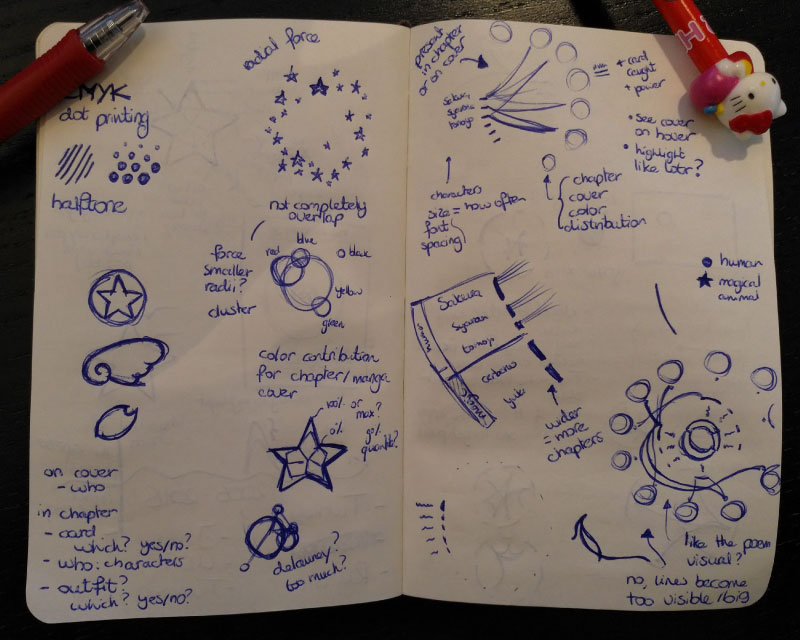I've always been fascinated by the CMYK dot printing process; where you can see the separate dots when you're looking at it up close, but move farther back and the bigger picture comes into view (I guessing I'm not the only one who could sometimes be found with her nose literally touching an old magazine, or old TV (for the RGB stripes), right....?). Recreating this CMYK dot technique for a visualization about a (printed) manga seemed like a proper style, and challenge. And challenge it was! I won't go into the details here (you can read a bit more in the code section), but below on the right page you can see some scribbles I made to understand how to recreate the CMYK (rotation of the 4 colors in the) effect.
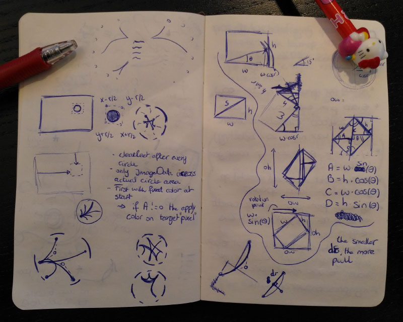Another mathematical challenge this month was for something that I didn't use in the end... At first I wanted to connect the inner circle of characters with the outer ring of chapters with swirling lines (to say it technically, two connected SVG Cubic Bézier Curves). Making sure that these lines would always flow around the inner circle and look good, took a lot of time and notes in my sketchbook! I always prefer to draw the approximate SVG path shape I have in mind to then try and figure out where new points and anchor points should be placed. The really hard part is to then understand how these points and anchor points change when the data changes; how to create a "formula" that works for all instances.
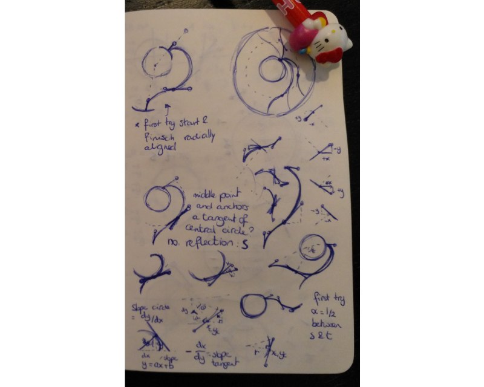The page below shows specifically how to handle the calculation of a tangent line to a circle for different circumstances. I needed this information for those swirly lines from above. But even though I ended up with different lines, I could thankfully use part of the things I'd figured out on these two pages to easily convert the lines to what became the final result (the more circular running lines).
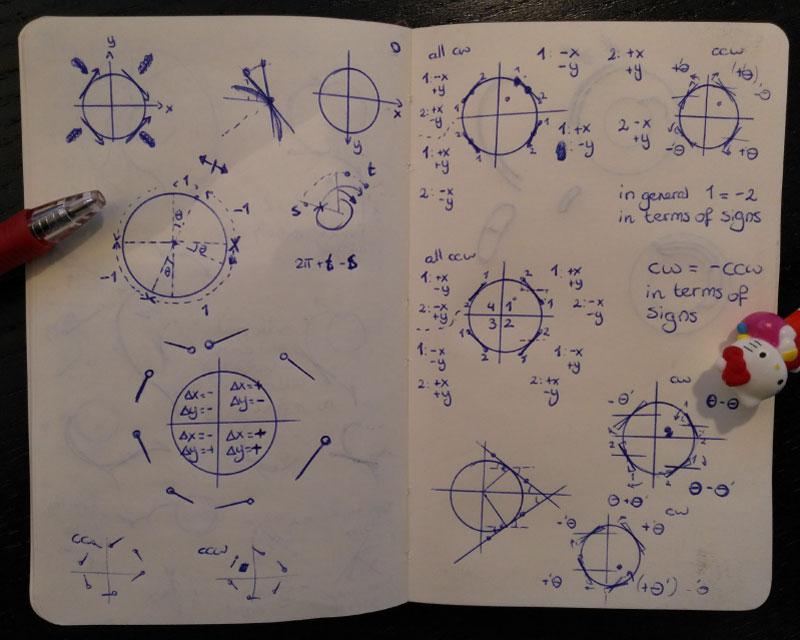I first focused on getting the ring of cover color circles on my screen. Mostly because I wanted to see how that CMYK idea would look as soon as possible. And thanks to this excellent example of multiply points of gravity by Shirley, that was actually a piece of cake 😃 But damn, those circles had to become quite small to make room for all 50 chapters! I was starting to get my doubts if the CMYK effect would work as well in this particular design as I'd hoped.
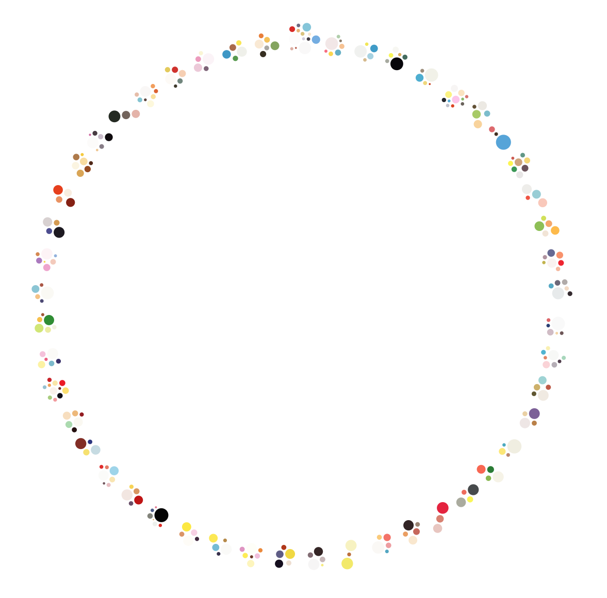Nevertheless, I first went to one of Veltman's amazing blocks in which he already neatly coded up a CMYK dot effect as SVG patterns (btw, I've started collecting my favorite d3.js blocks in a Pinterest board, so I have a visual 'bookmark' for each, which makes for easier retrieval I find). Rewrote that to create a separate pattern for each color and I had myself a ring full of CMYK based colored circles. But on closer inspection I found something I didn't quite like. Although the circles on the inside looked exactly how I wanted them, they were still SVGs. So they had been perfectly clipped into a circle. Truly like a pattern that you cut off. But I wanted my CMYK dots to smoothly fade out, not abruptly. But I also wanted to play with the idea of partially overlapping the circles, and having the colors mix even further, which wasn't possible with this technique.
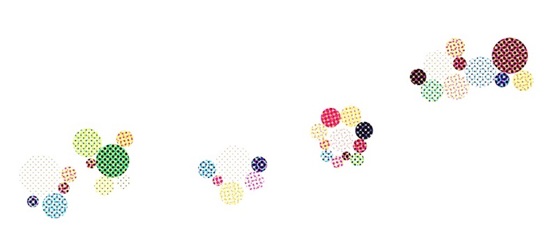I therefore did a wide search online looking for other examples. I already expected that using HTML5 Canvas was probably the way to go. And I did find two interesting options here and here that took me a good 3 - 4 hours to wrap my head around and combine into one. It took a lot of testing an tweaking...
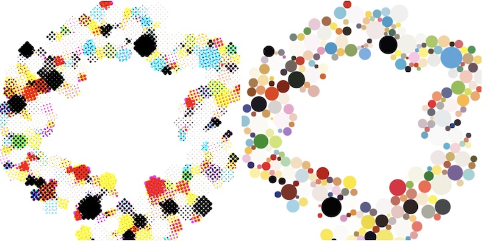But eventually I got the visual options and look I was going for. First, smooth edges. By which I mean that the dots get smaller around the sides, but all the CMYK dots are still full dots. But also that I could plot the circles on top of each other with the CMYK effects of both circles visible.
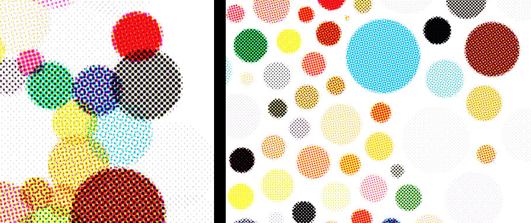And then I applied it to all the circles from the 50 chapters and..... as expected the circles were so small that there wasn't "enough CMYK" going on. It was sometimes a bit hard to actually get a feeling for the true color of circle because it contained only a few CMYK dots in itself 😖 Well, that's how (dataviz) design sometimes works, hours of work on something that never makes it to the end. So I converted a simple version into a block to perhaps use for another time and took a closer look at the original SVG version again. What to do about those crisp outer edges? What about adding a thick stroke? And yup, that fixed it enough for me, haha 😅
I thought the lines between the inner and outer circles would probably be the next most difficult thing to tackle, but to properly do that I first needed my inner circle. Whipping up the thin donut chart from my sketch was straightforward with d3's arc and pie layout. Still, I felt I first wanted to see if I could get the connections/relations between the characters "visually working" in the inside before I moved to those outer lines. Because if it didn't work I might have to think of a different general layout.
Time to write some custom SVG paths again! Below you can see the progress from the simplest approach, straight lines in the top left, to the final version (shape wise), in the bottom right. The final version is made up of circles, using the SVG arc command, re-using code that I had written for the small arcs in my November piece about Fantasy books.
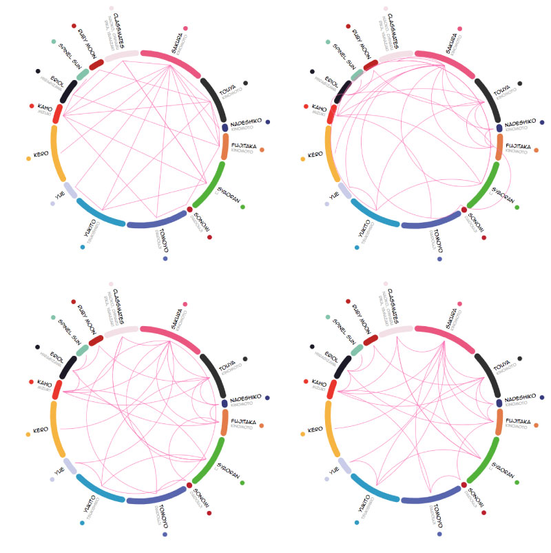I then colored the lines according to the type of connection (e.g. family, love) which made me see that there weren't too many lines in there to get insights from, no visual overload, pfew. Alright, then it was really time to dive into those outer lines...
To most extreme lines that I could create would run from a character to a chapter that's on the other side of the circle. The line would then have to swirl around the inner circle, without touching any of the other character's names. I thought I could probably pull that off by combining 2 Cubic Bezier curves. But making 1 of those curves act as you want, depending on the data, can be a hassle. And I found out that 2 was more than twice the hassle o_O
With difficult SVG paths I always start out with placing small circles along the line path itself (the red one in the center below) + the anchor points (the blue, green and yellow-orange one. The pink one I placed for another reasons that's too technical for me to explain here, hehe)
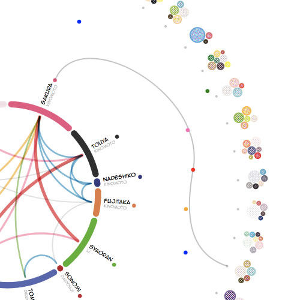After some manual tweaking with fixed numbers I had a shape for the longer line that I liked. I saved those settings and did another one, a short line. I then inspected how all of the settings change between the two options. This gives me hints on how to infer several formula's that will hopefully create nice looking lines, no matter the starting and ending points. But, like I said, that wasn't as easy this time as I'd hoped...
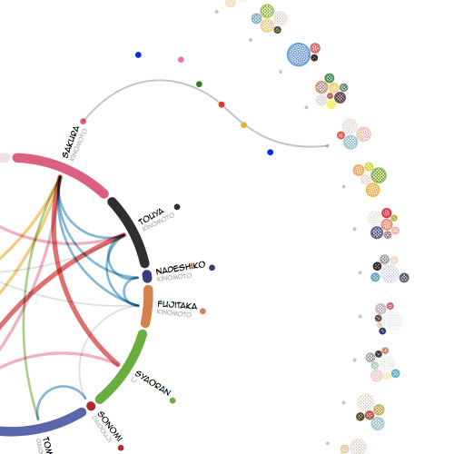Ugh, I don't even want to really think back on what journey eventually led me to have the lines I needed. Most of the notes in my sketches section are about this part. Because slightly different things need to happen when the line moves counterclockwise instead of clockwise. And if you mess it all up completely, well...
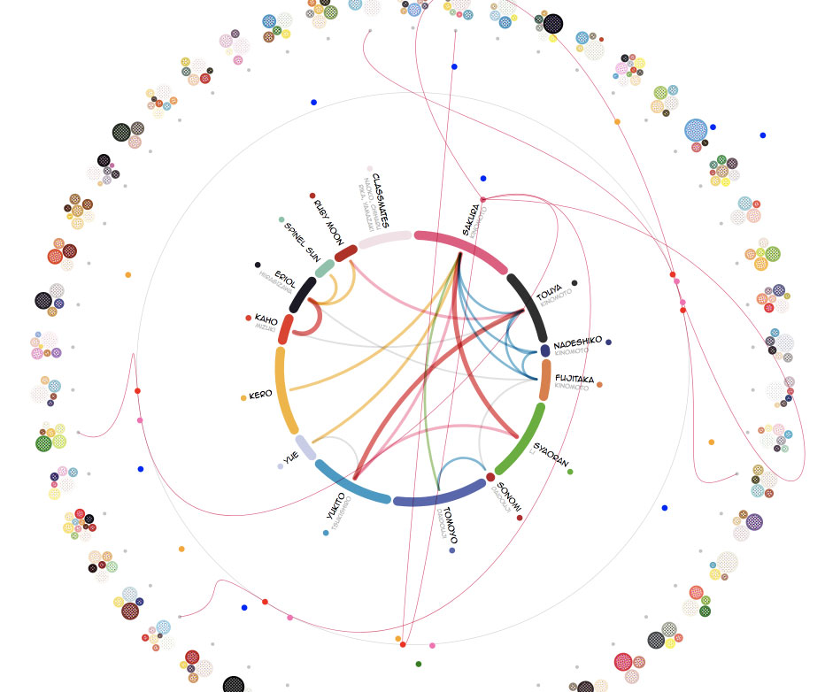Over many, many hours of testing, drawing, thinking and fiddling did I inch closer to having all the lines at least sort of going around the center. Although here the finer details of the lines were still quite.... odd.
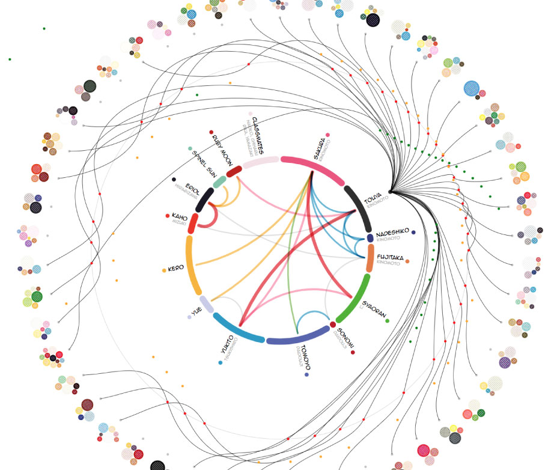I didn't quite make a not of how long this particular section of "creating the lines" took, but my guess is somewhere between 8 - 10 hours. After which I was left with the following when I visualized all of the lines (they represent the chapters that each character appears in)
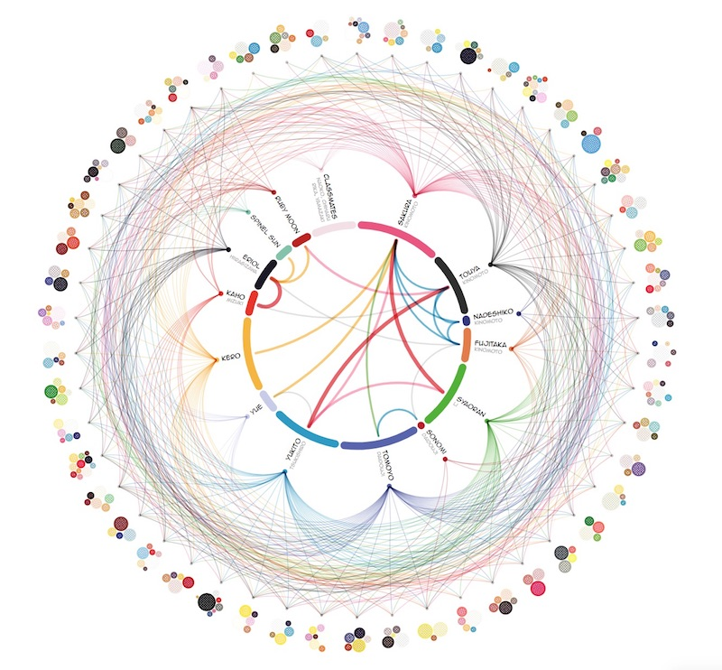Awesome, that looked like one big mess! There were too many lines in there to glean any insight. That would mean I'd have to create some sort of hover interaction that only shows you a subset of the lines when you hover over a character or a chapter.
Enough time spend on those lines for now. I therefore moved on to adding in the chapter and volume numbers. The inner donut chart inspired me to try something similar for the chapters as well. A donut chart with 50 equally sizes, rounded-off, sections, in which I could place a number. I was happy with the end result and could quickly move on. For the volumes (typically a collection of ±4 chapters) I started out with the same idea; a donut chart, but made even thinner, which I placed outside the ring of circles. Hmmmm, wasn't as happy with that, but in the meantime something else was bothering even more. Now that I'd placed more elements on the page and the seemed to get a sense of "consistency", those inner lines just felt way off 😕
Perhaps I could make them more tapered, as I did in my January visualization about Dragonball Z? That again took more time in tweaking my line formulas. And although I think it did improve things over the same-width lines.
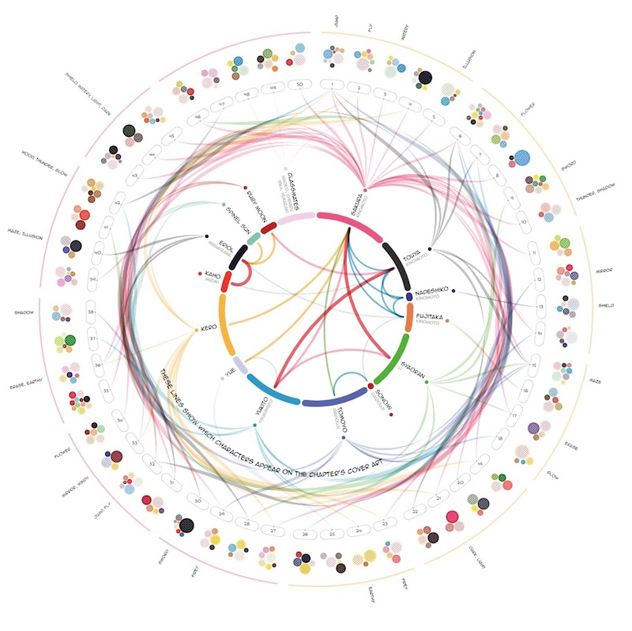And in of itself it had something nice going on when I implemented the hover interactions. Such as seeing who was in a particular chapter...
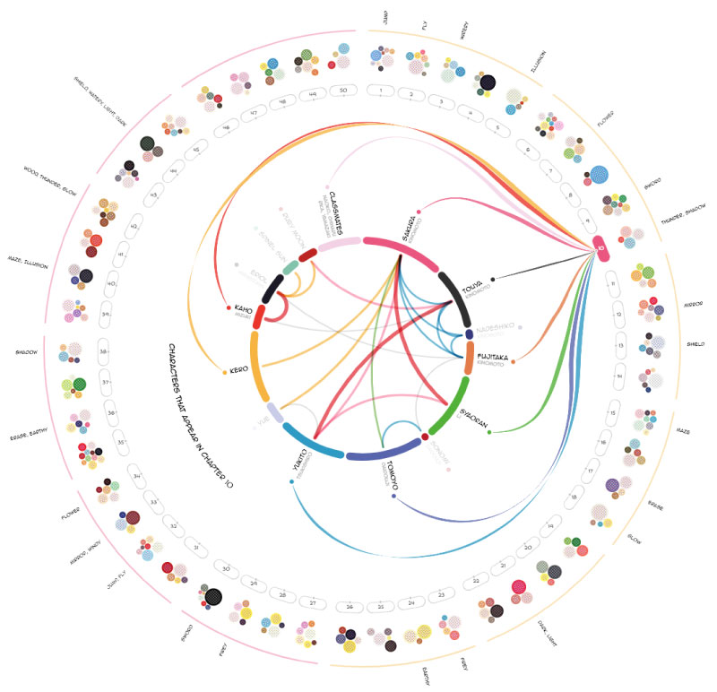...or when hovering over a character to see in which chapter they appeared...
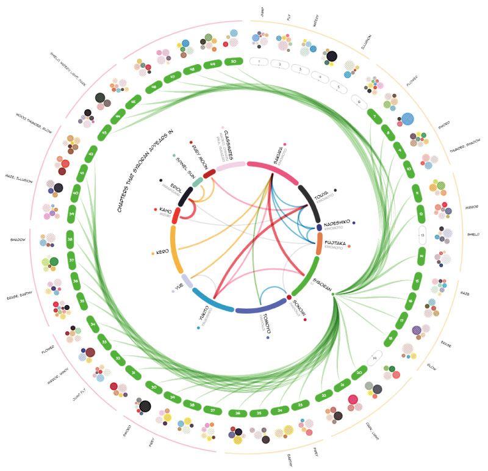I just felt that it didn't fit the rest of the visual in terms of design. Ugh! What to do about it! And all that work! 😭 And suddenly, very quickly after knowing that my swirly lines just weren't right, I had a new idea for the lines. Instead of making them swirl around, I could also make them run along circular paths. A bit like subway lines or piping in a home, when transformed to some radial layout
This idea was actually quite easy to execute. I could loop over each line to be drawn, create a tiny array of [radius,angle] points and feed that to d3's radialLine function, together with na interpolation function to curve the edges just a bit. Calculating the small array of radii and angles to feed to the d3.radialLine was a walk in the park compared to my previous cubic bezier curve shenanigans! (but actually enjoying solving geometry puzzles does help). Naturally, all that didn't go right on the first try. And thankfully I could use some of the work I'd done with the swirly lines, but the screenshots below were all made within 1 hour.
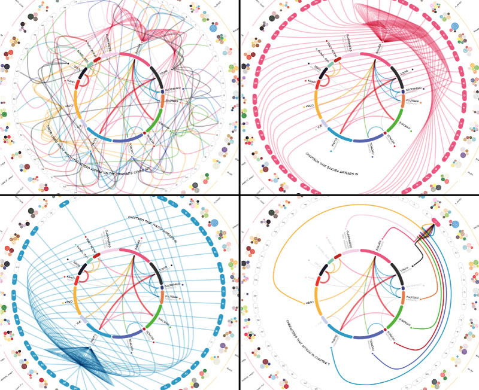O, and then I converted all those lines to HTML5 canvas by using the extremely useful .context option that is available in many of d3's drawing functions (such as d3.radialLine). That made things run nice and smoothly!
And now when you hovered over a character or chapter I felt that the resulting lines fitted perfecting with the "straight-roundedness" of the rest (I hope that made some sense, hehe). And as an added benefit, no more lines were overlapping!
The observant person will notice that I've actually implemented two slightly different line drawing "types". One is drawn by default when you're not hovering, but also when you hover over a character or color circle group. But another is used when you hover over a chapter. Try it for yourself and see what changes 😉
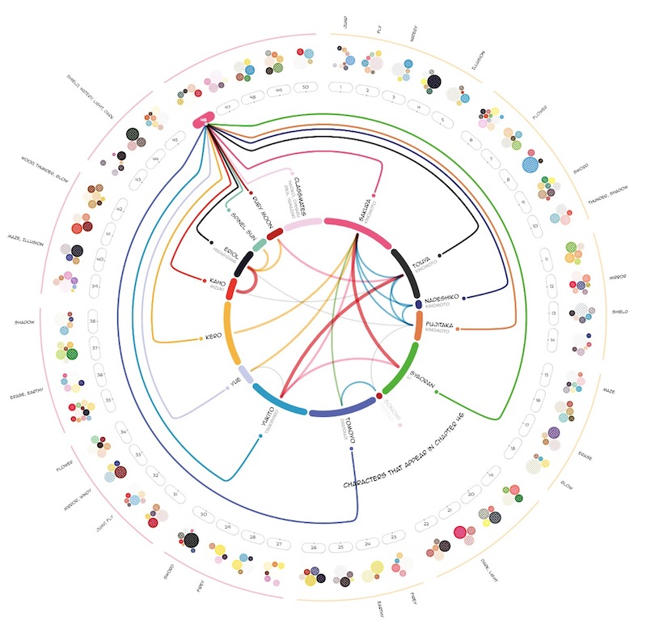Since part of the visualization was about the covers of the chapters. And because I knew most people that would get to the visual would probably not know about CCS, I wanted to incorporate some of the images from CCS. And I just so happened to have a nice large circular area in the center :) It took a wile to manually "cut-out" a good looking square image from all 50 chapter covers plus character images. But at that time I was in an airport and on a plane back from the Information is Beautiful Awards anyway.
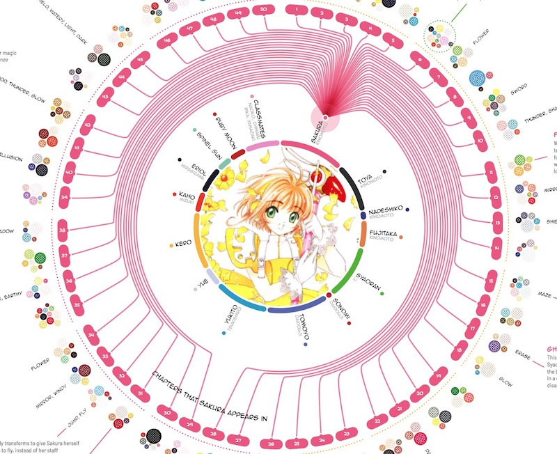With all these elements and layers of information in the visualization, I really needed a legend. After having written lines and lines of code to create custom legend in two recent client project (such as this one for Article 19), I wasn't in the mood to do that again. Therefore, I created my legends in Illustrator instead. That saved a lot of time over creating them through code.
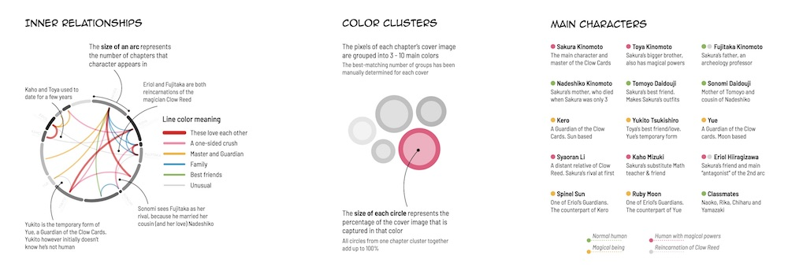However, as I was getting used to in this month, these were not the final ones...
More to come, still writing this section...
{kind=link}
{kind=link}
{kind=link}
{kind=link}
{kind=link}
{kind=link}
{kind=link}
{kind=link}
{kind=link}
{kind=link}
{kind=link}
{kind=link}
{kind=link}
{kind=link}
{kind=link}
{kind=link}
{kind=link}
{kind=link}
{kind=link}
{kind=link}
{kind=link}
{kind=link}